学术界×工业界：AI 原生时代（AI Native Era）中基础原理对 Silicon（芯片）设计的作用
这篇由 Meta Reality Labs Silicon、NYU、Stanford、Meta FAIR 的芯片设计与研究从业者联合撰写的立场论文，讨论芯片（Silicon）设计进入 AI 原生时代时学术界与工业界应如何协同转型。论文指出行业面临三大风险：认知卸载（盲目信任 AI 产出）、隐性知识二元流失（未编码为 AI 可读格式即永久丢失）与训练失衡，主张把组织隐性知识编码为 context、skills、规格与验收标准等 AI 可消费工件。方法层面，论文提出复用芯片领域已有的形式化与确定性检查（formal verification、STA、DRC、lint 等）作为 Agent 的 ground-truth grader 与 reward 信号以绕过训练数据稀缺，agentic workflow 采用分治式模块化分解与异构 Agent 编排，工具层通过 MCP 等机器可读接口与开源/surrogate 模型构建分层工具生态。关键结论是：AI 应作为基础原理之上的补充能力而非替代品；即使实现类任务提速 10 倍，受规划、评审、验证等剩余瓶颈限制整体收益约 1.66 倍，因此判断何时（不）用 AI、管理 token 成本与验证 AI 产出的能力愈发关键。
芯片（Silicon）设计行业正被 agentic AI 快速改造，但从业者和学生面临认知卸载、隐性知识流失、课程与产业实践脱节、Silicon 训练数据结构性稀缺、EDA 工具许可证与长运行时间瓶颈等问题；论文要回答学术界与工业界应如何调整训练课程、设计者角色、工具生态与研究协作模式，平稳过渡到 AI 原生 Silicon 设计时代。
立场/观点论文（position paper），无实验方法。核心框架包括：1) 将工程师隐性知识（如时序例外理由、功耗完整性 workaround）编码为标准化、机器可读的 AI 可消费工件（规格、约束、验收标准、context、skills），形成可跨团队与代际复用、可被 Agent 推理的知识库；2) 复用领域内已有的数学化确定性检查（equivalence checking、STA、DRC、lint 等）作为 Agent 的 reward/grader，无需标注语料即可评测 AI 产出；3) agentic workflow 采用 divide-and-conquer 模块化分解、细化任务粒度以缩小提示复杂度与错误面，并编排各阶段专精的异构 Agent 集合；4) EDA 工具需提供 MCP 等 AI 原生机器可读接口与厂商策划的 skills/context，配合开源工具与 surrogate model 形成多层工具生态；5) 倡导行业级标准化 Agent 互操作 schema 与共享评测基准（类比 MLPerf），并以 RL 框架（每次迭代自产 state-action-reward 数据）作为缓解数据稀缺的候选路径。
本文为立场论文，无作者自做的受控实验；论文引用的量化数据：2019 年 Microsoft 对 5,928 名软件开发者的分析显示，编码/修 bug/测试及文档、code review 等任务约占 44% 工时，据此推算即使 agentic AI 将实现类任务提速 10 倍，剩余工作流瓶颈也会把整体生产力收益限制在约 1.66 倍
Figure 5 显示多代 frontier 模型在 CVDP 基准的 RTL 代码生成与代码理解任务上 % Resolved 随时间持续提升（正文未给出具体数值，且脚注注明包含未经 Si2 直接运行或验证的数据）
教学激励设计给出量化权重示例：AI 辅助作业与实验占总成绩约 10-20%，闭卷监考考试占约 80-90%
区别于聚焦模型或算法的 AI for EDA 研究，本文的贡献是立场与框架而非技术实现：从 academia x industry 双视角系统论述 AI 原生转型，提出隐性知识二元流失命题（未编码为 AI 原生格式即不可恢复）、把形式化正确性检查复用为 Agent reward 以绕过数据稀缺、AI 原生研究技术转移模型（把研究成果打包为 context/skills/tools/agents 直接部署）等观点，并给出 AI fluency 清单（何时（不）用 AI、token 成本直觉、为 Agent 精确编码设计意图、识别涌现能力）。
相关度级别：high
命中能力域：3.1 上下文工程与记忆 | 3.3 Agent 架构与工具使用 | 3.4 多智能体协作 | 3.5 评测与可靠使用
理由：虽然论文的应用领域是芯片设计而非软件工程，但其对如何用好 AI 的论述与本团队多个能力域直接重合：5.2 节明确讨论工具需提供 MCP 等机器可读接口与厂商策划的 skills/context，替代把人读文档用 AI 蒸馏的易错做法（3.3）；5.3-5.4 节给出 agentic workflow 的分治式模块化设计、异构 Agent 编排、Agent 间标准化通信 schema 与失败/置信度上报机制（3.3/3.4）；3.4 节提出把确定性检查复用为 Agent 的 grader 与 reward 信号，2.3/4.2 节讨论认知卸载风险与何时不用 AI 的决策准则，4.1 节强调 token 用量遥测与成本直觉（3.5）；2.2/8.4 节主张把隐性知识编码为 AI 可消费工件以对抗知识流失（3.1）。这些原则可直接迁移到团队的 Agent 工具链、评测体系与知识资产化建设中。需注意它是无可复现方法与实验的立场论文，价值在于原则与检查清单。
建议动作：作为方法参考存档
arXiv:2609.09344v1 [cs.AR] 2026年9月8日
Vincent T. Lee
Meta Reality Labs Silicon，美国华盛顿州西雅图
vtlee@meta.com
Sai Zhang
纽约大学，美国纽约州纽约
sai.zhang@nyu.edu
Armin Alaghi
Meta Reality Labs Research，美国华盛顿州雷德蒙德
alaghi@meta.com
Brandon Reagen
纽约大学，美国纽约州纽约
bjr5@nyu.edu
Carole-Jean Wu
Meta FAIR，美国马萨诸塞州剑桥
carolejeanwu@meta.com
Thierry Tambe
斯坦福大学，美国加利福尼亚州斯坦福
ttambe@stanford.edu
Jean Boufarhat
Meta Reality Labs Silicon，美国加利福尼亚州森尼韦尔
jeanboufarhat@meta.com
Matheus Trevisan Moreira
Meta Reality Labs Silicon，美国加利福尼亚州圣地亚哥
matheustrev@meta.com
在这一转型中，我们倡导重新聚焦于芯片设计基础与核心原则，以指导行业发展。
核心的芯片设计第一性原理、规则与不变量，在快速变化的进程中提供了稳定的基础，从业者与研究者可以据此系统地锚定并构建 AI 原生（AI-native）的技能、直觉与设计栈。要实现这一点，需要理解 AI 如何与核心芯片设计原则及约束相互作用，而不是试图将基础技能与推理卸载给 AI。如果缺乏这种基础性的掌握，学生和从业者
通过将 AI 应用能力视为对现有设计方法的补充，AI 可以成为学术界与工业界从业者的强大增强能力。如果设计和使用得当，智能体 AI（agentic AI）不仅可以用于提升芯片设计生产力，还能够实现新的超级智能能力、可扩展的技术转移模式，以及强大的新型涌现设计能力。这些能力有潜力极大地增强个体研究人员与设计人员历来所具备的智力与专业知识能力。例如，
智能体 AI（agentic AI）有望成为几代人以来最具变革性的技术之一，并将实质性地改变我们开展芯片设计与工程的方式。在快速变化的格局中，其影响正在实时显现，这可能使芯片从业者与学术界人士在适应 AI 原生芯片设计时代时感到应接不暇。为了给应对这一转变的方式提供结构化框架，我们给出了来自学术界与工业界芯片从业者的联合视角，阐述我们预计将催化整个社区向 AI 原生芯片未来过渡的挑战、机遇与考量。特别地，我们再次强调核心芯片设计基础在学术训练中的重要性，以及这些基础知识为何在面向 AI 原生芯片设计的研究与工业实践中重新变得至关重要。我们希望本文所提供的观点能够为学术界与工业界人士提供有价值且互补的视角，以帮助他们解读、指引并催化向 AI 原生时代的过渡。我们预计将会出现许多相似且相互重叠的观点，但具体的技术细节将因利益相关方而异，因此社区汇集多样化的观点是有价值的。
面向芯片的 AI，智能体工作流，技术训练，工业实践，AI 原生
本节重点阐述了在向 AI 原生时代过渡的过程中，我们在硅领域培训与实践中所观察到的一些关键挑战。
基本原理是指那些随时间推移保持不变的核心不变量、基本规则、第一性原理和理论。由于这些底层机制在先进的 AI 自动化与工具面前依然持续存在，掌握基础理论、最佳实践和技术仍然十分重要。在具备扎实基础的前提下，AI 便可以作为一层补充能力，构建在这些不变的规则和最佳实践之上，而非取代基础才能与技能。在本工作中，我们所说的“基础”（fundamentals）既包括硅设计原理，也包括更广泛意义上可跨学科迁移的技能。更具体而言，硅领域特有的基础涵盖如下方面：
在实践中，硅设计高度多样化且深度专业化，因此从业者通常会选择其中一个（或少数几个）领域，同时仍学习技术栈其余部分的基础知识。这给硅设计带来了独特的挑战，因为在各个专业化专业领域之间，角色通常较难互换。这与软件设计不同——软件设计的专业化程度没那么极端，技能集在不同角色之间通常更易于互换（至少在较初级的职级层面是如此）。
除硅设计的第一性原理之外，我们在本工作中还将论及通用基础技能，其涵盖：
最后，下一代硅从业者需要具备一整套全面的 AI 素养（AI fluencies），以便在所有现有培训之上叠加 AI 能力。关键挑战之一是确定哪些 AI 能力是有价值的，尤其是因为 AI 技术和领先工具仍处于不断变化之中。因此，在本工作中，我们将尝试着重阐明核心基础原理如何与 AI 能力相互作用，从而将那些对 AI 原生时代可能重要的 AI 素养与概念关联起来并赋予其具体语境。
2
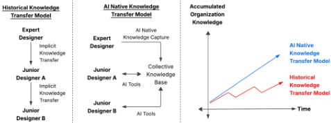
长期以来，芯片设计一直依赖于一支多元化的专业专家队伍，这些专家在各类设计角色（例如数字设计、验证、DSP、SoC 等）中掌握着部落知识。因此，每个芯片企业的工程师头脑中都承载着大量隐性知识，例如时序例外的设定依据、针对特定工艺节点的电源完整性变通方案，以及对何时可以接受设计权衡的直觉判断。从历史上看，这种隐性专家知识之所以够用，是因为掌握这些知识的设计者正是将其付诸实践的人。然而，随着 AI 的出现，从执行基础原理转向编排和验证 AI 驱动的工作流，加剧了隐性知识的流失，这有可能成为 AI 原生芯片设计的瓶颈（图 1）。在 AI 原生工作流中，依赖隐性知识从根本上与 AI 工作流不相容，因为这些知识对 AI 来说是不可见的，无法被其利用。这使得实现芯片设计自动化以及构建自主 Agent 系统的难度显著增加。
知识流失的影响还会在工程师和 AI 模型的代际之间不断叠加。当一名工程师离开职场或转换角色时，这些隐性知识就面临消失的风险。传统上，这一知识流失过程是渐进的，因为其他工程师或团队可以通过代码评审、导师带教和调试会议间接吸收其中的片段。然而，在 AI 原生工作流中，这种流失是二元的：如果这些知识从未以 AI 原生格式编码，那么无论模型如何改进，都无法找回已丢失的专业知识。其结果是，AI 系统可能永远学不会如何自动化那些隐性知识已丢失的任务，反而会做出违背未明示假设的决策。AI 本身带来的挑战又进一步加剧了这一风险：需求不够精确会为 AI Agent 产生幻觉或犯错创造空间，而在必要的隐性知识已经流失的情况下，这些错误可能无法被察觉。
为了防范这些风险，各组织应当思考如何将其芯片领域的基础原理和部落知识捕获并编码为 AI 可消费的制品。这使各组织能够将知识以 AI 兼容的格式加以积累和复合，从而用于改进一代又一代的 AI 能力（模型、Agent、工具等）。每一个被形式化的约束、规范和验收标准都成为集体知识库的一部分，AI Agent 可以对其进行推理，并将其在团队之间或不同世代从业者之间传递。相比之下，那些让知识保持部落化、分散在个体工程师专业能力之中的组织，会发现这些专业知识越来越难以扩展和传递，也更难防范知识流失。此外，由于 AI 能力的提升会随时间不断复合累积，这两种运营模式之间的差距将随着每一代模型而不断扩大。
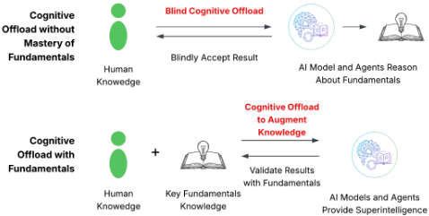
我们还预期这一挑战将超越任何单一组织的范畴，扩展到整个行业。如果不在各行业领域之间保存隐性知识，那么一旦某家公司明天不复存在，大量隐性知识也将随之永久消失，这种风险很高。防范这种行业规模的知识流失，同样需要我们重新思考如何捕获、交流与保存这些知识。为了可靠地实现这一点，我们应当采用标准化的、机器可读的格式来表达规格说明、约束、假设、需求与验收标准，从而实现类似于现有标准化通信协议的共享交换。
AI 工具带来了新的风险：由于对 AI 的过度依赖与认知卸载（cognitive offload），基本概念与专业知识可能永远无法得到充分掌握。认知卸载的定义是：将任务外部委托（给 AI）以避免必须亲自明确执行该项工作的做法。如果运用得当，认知卸载可以成为增强设计者生产力的强大手段（例如超级智能）；然而，过度的认知卸载存在侵蚀设计者进行验证、批判性思考、开发高效解决方案以及捕获潜在 bug 的能力的风险（图 2）。当需要实现精确的检查与不变量，以确保硅设计所必需的严密无隙的正确性时，这就会成为问题。软件工程面临类似的挑战，但这一问题在硅设计中要重要得多。在软件中，由于修复成本显著更低，bug 可以在部署后进行修补；而在硅设计中，修复 bug 则需要异常巨大的资源投入。
认知卸载在行业实践中的一种表现形式是：盲目地应用 AI 来制定解决方案、卸载任务，并绕过基本的最佳实践与检查。例如，我们看到许多这样的实例：无论是 AI 生成的设计还是 AI 生成的测试，都违反了软件与硅开发中由来已久的最佳实践，即保持这些过程相互分离。我们还看到，那些已有确定性且已知解决方案的任务也被盲目卸载，实际上是利用 AI 重新发明解决方案，而这些方案更加消耗资源且可靠性更低。最后，我们还看到，在使用 AI 的情况下，学生和设计者有时无法解释 AI 生成的解决方案为何有效；这削弱了对所生成交付物（collateral）的信任，并且通常无法满足硅设计所需的严密无隙的验证保证。
3
在学术环境中，AI 工具使人们能够轻易绕过那些有助于培养精通能力的有益摩擦（productive friction）。通过解答习题、出错、并推理出错的原因，核心概念与基本原理才能得以内化；然而如今，在这一过程尚未开始之前，AI 就能产出一个看似正确的答案。若不加以解决，这将危及先进的研发能力赖以构建的根本基础。这对于 AI 原生（AI native）硅设计实践而言尤其成问题，因为这种实践除了需要掌握新的 AI 技术与工具之外，还需要理解硅设计的全部既有技能、基本原理与专业技术知识。
为了防范认知卸载的种种陷阱，芯片设计人员将需要对基础知识保持同样深入的钻研——而 AI 恰恰在诱使学生和工程师绕过这种钻研。作为从业者，如果你从未亲身经历过做出该设计决策的艰难过程，也从未亲自理解过该解决方案是否正确，你就无法判断 AI 是否做出了一个好的设计决策。同样，如果你从未亲自执行或理解过某项任务，你也很难完整地定义该任务，并将其所有技术参数作为提示提供给 AI。
芯片设计通常以自底向上和自顶向下两种视角来组织（图3）。自底向上的课程，如器件物理、电路理论、数字逻辑和 RTL 设计，帮助学生建立关于物理约束如何经由各抽象层次向上传播的基础直觉。自顶向下的课程，如系统架构、基于规范的设计以及基于项目的毕业设计，则培养在系统层面推理设计意图、约束与权衡的能力。经过多年的实践与完善，课程体系已调整至大致匹配工业界实践的需求。
然而，随着 AI Agent 加速设计流程，从业者在设计栈与工作流中投入时间的位置将发生转移（且很可能是不均衡的）。这种转移的一部分将指向更高层次的自顶向下工作：制定系统级设计意图、定义约束与验收标准、编排 Agent 工作流以及验证设计结果。对于基础知识以及 AI 尚不能有效胜任的较低层次技术领域，自底向上的理解仍将保持其重要性。为适应这一变化，课程体系需要重新平衡并调整侧重点的分配：即在自底向上训练与运行 AI 原生工作流所需的自顶向下高层次推理和编排之间，各应投入多少精力。
1 各训练领域需要调整的幅度仍是一个悬而未决的问题。此处所示的转移幅度仅作说明之用。
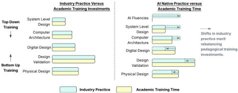
定义在每个技术领域中何为“最低限度充分”的掌握本身就是一个不容小觑的挑战；设计人员需要在整个设计栈上具备足够的知识，以便理解约束为何存在、识别 AI 生成的输出何时违背物理现实，并制定能够以确定性软件加以捕获的有意义的评估标准。他们至少需要曾在时序收敛、电源完整性和功能验证上经历过一番挣扎，才能培养出评估某个 AI Agent 的解决方案是否可信所需的判断力。这一精确边界将随着 AI 能力的进步而不断演变，但从高层来看，自底向上的掌握程度很可能需要校准到有效开展自顶向下推理与验证所必需的水平，而非历史上手工实现所必需的水平。
一个更具现实性的挑战是，大学环境难以接触和了解工业界自顶向下芯片设计任务的实际开展方式。自顶向下的芯片设计推理几乎只在工业界中实践，其对象是处于商业运营约束之下、高度复杂的专有产品规格。量产芯片项目可能耗时数年，且架构决策会制约每一个下游设计决策，这一点很难在单一学术课程中呈现。要弥合这一差距，需要工业界与学术界之间更紧密的合作（例如实习、培训项目等），以便在学术环境中提供对自顶向下设计推理的代表性接触，从而重新平衡课程设置。
不重新平衡培养的风险在于，毕业生可能在手动实现方面技术娴熟，却对专业实践中承担编排与验证角色准备不足。而在另一个极端，这也有风险培养出能够明确说明自己需求、却无法识别结果何时出错的芯片设计人员。两种极端都不可取，因此我们需要保持开放态度，随着 AI 在工业实践中能力的不断演进，有意识地加以平衡并持续重新校准培养重心。
A key difference between software and silicon for AI development is the availability of training data (Figure 4). In software, opensource repositories provide billions of lines of code, bug reports, test suites, and execution traces that can be scraped, labeled, and harnessed to train increasingly advanced LLMs. In contrast, highquality silicon data is comparatively and structurally scarce since it Academia x Industry for Silicon Design is locked behind NDAs, coupled to specific technology nodes, fragmented across vendor-specific formats, and rarely shared outside industry repositories. This initially limits the traditional AI scaling laws which rely on the availability of additional data to improve model performance since the data simply does not exist in sufficient quantity or diversity (at least not yet).
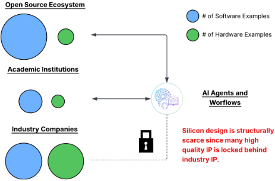
The structural data scarcity problem is also deeper than simply available RTL IP designs. Each stage in the chip design flow also requires or produces intermediary collateral such as specification documents, EDA tool logs, bug reports, and timing analyses which engineers use to drive educated design decisions. This design process and collateral are rich with intermediary signals and data that would need to be harnessed to formulate intelligence to drive silicon design agents. The problem is further exacerbated since many of the key gates and checkpoints require implicit knowledge for tasks like sign-off analysis and judging whether results are sufficient such as whether timing margins are reasonable, if it is acceptable to waive DRC violations, or whether verification coverage adequately covers corner cases.
Converting these human judgment calls into deterministic, machine-evaluable checks is already a substantial engineering challenge. Even where organizations succeed in formalizing these checks into deterministic evaluation criteria, the resulting artifacts can be internal and often require custom tool flows/methodologies to evaluate which are also guarded by the same NDAs and IP protections. This makes the structural scarcity problem multilayered since not only is the raw design and intermediary data scarce and likely internal, but the evaluation infrastructure needed to grade any AI agents is equally scarce and likely idiosyncratic. This makes enabling the flywheel to improve AI models for silicon structurally more challenging; as a result, any viable AI strategy for silicon will have to account for and resolve these challenges to fully enable transformational silicon design capabilities.
随着人工智能（AI）迅速改变技术格局，使学术课程保持与时俱进这一历史性挑战，已被AI创新的巨大速度与变革节奏急剧放大。这对学术培养提出了一个问题：“当变革的速度超过传统的课程周期时，我们该如何调整学术培养？”由于AI使知识前沿迅速扩展，而先进技术又更快地固化为必备的基础技能，这一困境尤为尖锐。为了弥合产业实践与课堂教学之间的差距，我们需要重新审视如何教学、教什么，以及如何组织我们所教的内容。
这一教学转型的核心是教学方法的转变。AI工具的快速演进带来了显著的复杂性，从应对快速更迭的软件版本，到处理AI模型非确定性、有时高度个性化的输出。这可能与我们的基础知识教学方式产生冲突，因为后者通常在确定性、精确且可预测的环境中开展。为弥合这一差距，课程需要在现有结构化课程进阶的基础上吸纳AI主题：先确立数字设计的核心基础，进而过渡到非确定性的AI辅助工作流程，再进阶至完全自主的智能体（agentic）设计，最终进入先进的前沿主题。
为了在不延长学位学制的情况下容纳这一扩展后的内容范围，教育者很可能需要审慎考虑利用AI本身来优化学习过程。通过在教师的密切指导下融入AI辅助教学，学生可以在压缩的时间框架内消化并掌握基础概念。通过这种加速的核心教学所节省的学时，随后可以再投入到动手实践或额外的进阶课程材料（例如AI训练）中。AI也可用于更新课程材料，但人工监督仍将至关重要，以确保基本事实和原理保持正确，因为这些内容最终将支撑学生职业生涯的后续发展。这些更新后的教学方法在硅设计中的具体机制将如何体现仍是一个开放性问题，但在我们适应AI原生时代的过程中，整个共同体需要逐一解决这些问题。
本节重点介绍在 AI 原生时代中，芯片设计角色的一些预期转变。
先进的大语言模型（LLM）在代码生成以及在不同编程语言表示之间进行无缝转换方面表现出色。例如，AI 编码 Agent 如今已普遍擅长将自然语言规格说明转换为 Python、C++ 等最常用的编程语言。在芯片设计领域，由于芯片训练数据的稀缺，前沿 LLM 目前在某些能力上仍有欠缺。然而，我们预计这一状况将会改变，并且已经开始看到 LLM 在寄存器传输级（RTL）代码生成方面的效果有所提升。图 5 展示了几代前沿模型在 CVDP [13] 代码生成与代码理解基准测试（benchmark）上的结果。
从宏观层面来看，基于模型能力日益增强所呈现的数据和趋势，我们预计前沿模型将使面向 RTL 的代码生成逐渐商品化。因此，我们预计芯片设计师的角色也将逐渐转向更高层次的编排任务，正如软件代码商品化改变软件工程角色那样。与此同时，我们可以借助迁移学习、上下文学习（in-context learning）以及其他技术来弥补 RTL 代码生成的不足，这些技术在各类 RTL 任务上已展现出合理的效果 [4, 12, 17]。从长远来看，随着 LLM 在 RTL 代码生成方面的性能不断提升，业界应当重新审视各种芯片设计语言以及硬件领域专用语言（DSL）的角色与价值主张。例如，如果从规格说明到 RTL 的转换最终被商品化，那么领域专用语言、更高级别的硬件描述语言或高级综合（HLS）语言在生产力方面的价值主张就应当被重新思考和重新评估。
人工智能（AI）已大幅加快了代码生成、测试实现和调试等特定任务的执行速度。因此，工作流瓶颈正逐渐转移到规划、批判性思维、沟通、评审和验证等其他领域，使得掌握这类任务变得愈发重要。为了说明这一转变的大致幅度，我们引用微软（Microsoft）2019 年的一项研究（早于新冠疫情和 AI 带来的冲击），在该研究中，研究人员分析了 5,928 名软件开发人员将大部分工作时间花在了哪些方面。
这项研究的结果（表 1）表明，编码、缺陷修复和测试等开发密集型的实现类任务，以及文档编写和代码评审等可借助 AI 辅助的任务，通常约占软件开发人员工作时间的 44% [10]。这意味着，即使智能体式 AI（agentic AI）能将实现速度提升一个数量级（比如 10 倍），其余的工作流瓶颈也会将整体生产力提升限制在 1.66 倍。尽管目前尚不存在针对芯片设计的类似数据，但我们预计在宏观层面上趋势将是相似的。更广泛地说，这一趋势意味着产业界和学术界应当重新强调对基础“软技能”的培训——例如技术沟通、清晰表达和协作能力——这些技能是加速完成其余工作流任务所必需的。
芯片设计需要分布在不同角色上的众多专业专家汇聚协作，共同构建一颗芯片。由于每项芯片设计任务都要求窄而深的专业化，这些角色在历史上一直无法直接互换；例如，一名 RTL 设计验证工程师无法毫不费力地直接转任固件工程师或功耗架构师的角色。这使得芯片设计中的角色和资源比软件工程中更难互换，而软件工程中角色的集中度和差异范围都更窄。
为了解决这一问题并防止知识流失，芯片从业者应当理解如何构建和利用超级智能（superintelligence）（图 6）。超级智能是指利用 AI 工具和上下文来增强单个设计师的智能与能力的概念，而这些上下文所涉及的领域设计师可能并非原生专家。例如，通过利用关于向量架构的超级智能，非专家也许能够在不了解特定架构细节或 ISA 内建函数（intrinsics）的情况下应用向量代码优化。这种超级智能之所以成为可能，是因为智能体式 AI（agentic AI）提供了一种可扩展的机制，能够通过上下文、技能、工具、智能体（agent）等来捕获和吸收任何设计工作流所需的专业知识。这些机制的叠加特性使得一种集体超级智能上下文成为可能，其能力大于各个个体专业知识池的总和。
随后，这种超级智能可以在非专家之间部署和普及，以增强单个设计师的能力。特别是，这使得芯片设计师能够在角色上更具弹性，从而更好地支持芯片项目整个生命周期中的周期性开发行为。这种集体超级智能的完整能力与局限尚不为人所知；然而，芯片从业者仍然需要理解这项技术能赋予哪些类型的能力，以及如何构建、部署和应用这些能力。
6
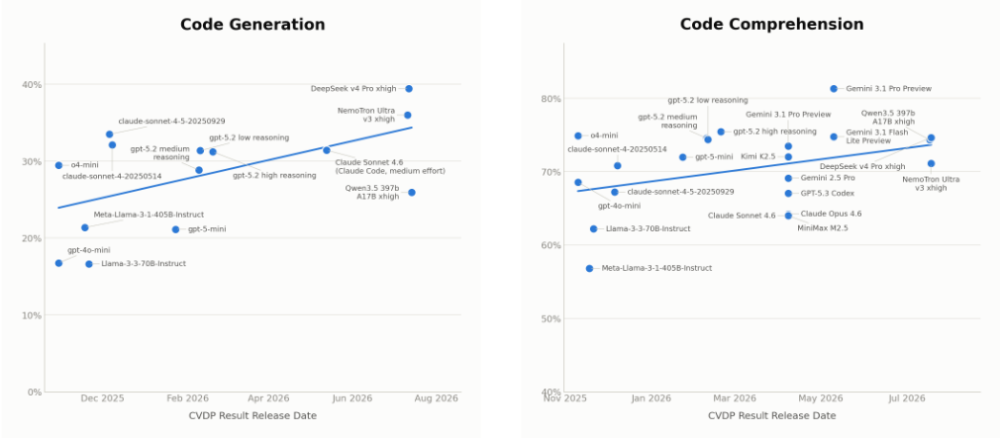
2 包括已提交但既未由 Si2 直接运行也未由 Si2 直接验证的数据。
| Activity | Workflow Share (%) | Projected Share (%)@ 2 × | Projected Share (%)@ 5 × | Projected Share (%)@ 10 × | |
|---|---|---|---|---|---|
| Implementation Tasks Accelerated by AI | Coding | 15 | 9.6 | 4.6 | 2.5 |
| Implementation Tasks Accelerated by AI | Bugfixing | 14 | 9 | 4.3 | 2.3 |
| Implementation Tasks Accelerated by AI | Testing | 8 | 5.1 | 2.5 | 1.3 |
| Implementation Tasks Accelerated by AI | Reviewing Code | 5 | 3.2 | 1.5 | 0.8 |
| Implementation Tasks Accelerated by AI | Documentation | 2 | 1.3 | 0.6 | 0.3 |
| (i.e., | Specification | 4 | 5.1 | 6.2 | 6.6 |
| (i.e., | Meetings | 15 | 19.2 | 23.1 | 24.8 |
| (i.e., | 10 | 12.8 | 15.4 | 16.6 | |
| (i.e., | Interruptions | 4 | 5.1 | 6.2 | 6.6 |
| Other Workflow Tasks everything else) | Helping | 5 | 6.4 | 7.7 | 8.3 |
| Other Workflow Tasks everything else) | Networking | 2 | 2.6 | 3.1 | 3.3 |
| Other Workflow Tasks everything else) | Learning | 3 | 3.8 | 4.6 | 5 |
| Other Workflow Tasks everything else) | Administrative Tasks | 2 | 2.6 | 3.1 | 3.3 |
| Other Workflow Tasks everything else) | Breaks | 8 | 10.3 | 12.3 | 13.2 |
| Other Workflow Tasks everything else) | Various | 3 | 3.8 | 4.6 | 5 |
| | Activity | Workflow Share (%) | Projected Share (%)@ 2 × | Projected Share (%)@ 5 × | Projected Share (%)@ 10 × |
Despite the structural data scarcity problem, silicon design has a key structural advantage in that many of the tasks have existing mathematically precise correctness criteria that can be leveraged.
For instance, areas like functional verification already employ equivalence checking and formal verification techniques which mathematically ensure transformations preserve semantics (albeit with potentially long setup run times). Static timing analysis tools yield highly precise deterministic pass/fail checks against timing constraints, and design rule checks enforce physical manufacturability Academia x Industry for Silicon Design with binary precision. Each of these checks is empirical, deterministic, and precise, and provides ground-truth reward signals where correctness is backed by mathematics (i.e., no subjective human annotation). Thus, designers should transfer and reapply these formalized checks to agentic silicon workflows to leverage existing and formalized reward functions.
7
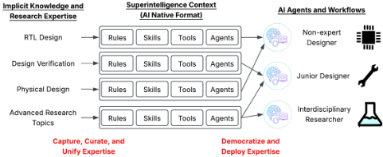
If properly applied, the evaluation and graders required to guide agentic AI workflows and design can still be developed using these formalized checks despite the scarcity of labeled data that would otherwise be needed. For instance, low-level design tasks like lint, syntax validation, and basic constraint checking are typically fast and can provide rapid reward feedback to agentic workflows. On the other extreme, full sign-off flows like timing closure, DRC, and LVS provide the formal checks to gate the design for production. Since each signal is a deterministic grader, it enables a way to reward AI agents and provides feedback on the quality and correctness of any AI-generated collateral without requiring pre-existing training corpora. As a result, designers should be able to identify and leverage existing deterministic evaluation signals throughout their workflows to guide AI agent design in lieu of labeled data.
随着 AI 工作流生成的交付物（collateral）数量不断增加，设计者应将更多时间转移到解读、信任并解释这些结果上。如果我们仅向 AI Agent 提供纯功能正确性或基于功耗、性能、面积（PPA）的奖励信号，便没有任何机制约束 Agent 遵循人类可解释的模式或传统设计方法学。另一方面，放宽约束也有其益处，因为 Agent 可以更自由地发现任何人类工程师都未曾构想过的电路拓扑、微体系结构组织或物理实现。
这些考量引发了有关验证与信任的根本性问题，而半导体界尚未大规模地正视这些问题。当设计由人类实现时，评审者可以追溯设计依据，将其与已知拓扑进行对照，并借助多年经验积累而成的模式识别能力。而当 AI Agent 产出一个功能正确却不遵循任何可识别模式的设计时，这些传统验证机制便会失效，从而使设计更难获得信任。因此，AI 原生时代的设计者应当更加熟悉如何：(1) 验证设计行为并制定全面的检查以捕获新型失效，以及 (2) 提供可解释的总结（针对可能的新型模式），以验证并论证 AI 生成的设计决策。
在 AI 原生的未来，芯片设计从业者与研究人员将需要在经典领域和新兴 AI 技能两方面都建立起 AI 直觉。
芯片设计者经过多年的学术训练与实践积累，会形成关于如何优化自身工作流程以及功耗、性能、面积和资源使用等设计指标的直觉，从而能够近乎条件反射式地做出设计决策。在 AI 原生时代，芯片设计者还需要培养关于 AI 如何与这些经典芯片设计直觉交互并对其加以增强的直觉。为了使这一点具体化，重要的是理解我们当初是如何建立这些经典直觉的，从而类比分析它们如何与 AI 交互并结合（表 2）。
工作流直觉。与软件相比，芯片设计的一个显著不同之处在于失败的严重后果，以及长时间运行且受许可证限制的 EDA/CAD 工具流程。这使得以往的芯片设计工作流程一直以资源密集型的工具流程运行为瓶颈，而为了优化运行时间，这类运行通常被节制地使用。通过经验积累，设计者会对综合（synthesis）或布局布线（place-and-route）工作流大致需要多长时间、哪些任务和工具运行较快形成直觉。这种运行时间直觉使我们能够对芯片设计工作流进行组织和并行化，从而将干扰降至最低并最大化工作流吞吐量。例如，我们可以将需要数小时的 EDA/CAD 流程在夜间批量运行，并在第二天早上查看结果，而不是在中午启动流程，让结果在下班后的时间里闲置。
如今，AI 既带来了新的机遇，也带来了新的挑战：一方面，AI 现在能够自动编排这些流程；另一方面，它也可能使运行时间进一步恶化。自动化工作流编排对于持续调用和监控长时间运行的任务很有价值，但由于 AI 容易出错，它也有增加 EDA 工具流程调用失败次数的风险。AI 智能体（agent）的运行时间同样可能难以预测（例如智能体循环，agentic loops），这带来了额外的工作流优化挑战。为了建立这种直觉和经验，从业者需要有意识地进行实验，并观察 AI 工具在各种设计任务中的行为表现及其与 EDA 工具的交互方式，就像我们当初学习掌握长时间运行的 EDA/CAD 工具那样。
功耗、性能与面积直觉。长期以来，作为芯片设计者，我们一直致力于平衡并优化功耗、性能和面积（PPA）。经过多年的训练，关于不同设计决策和技术与 PPA 改进之间关联的直觉如今已近乎条件反射。例如，如果设计未能达到时钟频率目标，我们会从优化技术工具箱中寻找手段，例如添加重定时（retiming）或流水线寄存器；如果需要优化功耗，我们会采用时钟门控（clock gating）和 DVFS 等技术；如果需要最小化面积，我们会尝试复用模块和电路，以降低资源需求。这些技术和方法都已十分成熟，是多年训练与经验的结晶。
8
| Classical Intuition Type | Silicon Design Intuition Example | AI Native Silicon Intuition Example |
|---|---|---|
| Workflow | An EDA tool run for my design takes 8 hours so I will structure my workflow to run the tools overnight so I can inspect the results in the morning. | This silicon design task is relatively easy for the AI so I'll run it with lower effort instead of high or max effort to reduce run time. |
| Power | If I reduce the active duty cycle of the workload, the silicon will consume less power so I want to look for duty cycling opportunities. | I want the AI to optimize the design power autonomously. Here are the techniques the AI can try and how to evaluate autonomous optimizations. |
| Performance | Inserting additional pipeline registers can improve the clock speed and performance of the design so I will look for opportunities along the critical paths. | The AI agent can iteratively analyze timing slack across thousands of paths simultaneously, so I will prompt it to insert retiming registers and re-balance pipeline stages along critical timing paths autonomously. |
| Area | Sharing hardware logic across different operations or reusing memory blocks reduces total die size, so look for opportunities to time-multiplex resource-heavy components. | Since the AI agent can explore and find non-obvious optimizations I'll have it autonomously explore the vast microarchitectural design spaces in parallel for non-obvious area tradeoffs for floorplanning and logic-sharing. |
| Resource Usage | I need to make sure that we use EDA tools sparingly and only for tasks that require sign-off quality results. | Tokens are resource intensive so I need to engineer my prompts to express the silicon design specifications as efficiently as possible. |
| Design Specification and Validation | To fully specify an IP block design, the design specification needs to document the ports, interface bit width, internal functionality, etc. | To fully specify a task for the AI, I need to provide these technical details and specifications in the prompt to ensure the AI does not hallucinate or make potentially incorrect assumptions. |
| Classical Intuition Type | Silicon Design Intuition Example | AI Native Silicon Intuition Example |
随着先进 AI 的发展，芯片设计者应当更新自己的工具集，学习如何将 AI 应用于功耗、性能与面积（PPA）优化任务，以补充现有的直觉与技术。这需要扎实的基础训练，因为设计者必须先理解现有技术的基本机制、效用及其对 PPA 的影响，之后才能应用 AI 来进一步获得额外收益。例如，AI 工具的最新进展允许用户将配方（recipe）与技巧编码到技能文件（skill file）中，AI 可以利用这些文件来编排并执行任务。然而，要使这些技能发挥最大效力，设计者应当同时表达出现有的技术直觉，即（1）何时应使用该技能，以及（2）如何执行这些任务。对于 PPA 任务，设计者应培养关于何时部署每种 AI 解决方案以及其会对结果产生多大影响的直觉，从而最大化所投入资源的回报。
资源使用直觉。芯片设计早已围绕资源约束来构建工作流程与行为。例如，EDA/CAD 工具许可证通常按席位按年收费，因此团队会构建工作流程，确保许可证池得到高效共享，以最小化资源使用。在更高的层面上，开发现代芯片所需的资源十分庞大（图 7），因此我们设有严格的签核（sign-off）与前置的验证检查，以防范惨重的损失。
同样，在 AI 原生时代，设计者需要在我们芯片设计工作流的背景下建立关于 token 成本效率的直觉。这需要随时间推移持续检查和测量 token 使用遥测数据；这使设计者能够将所完成的工作或产生的影响与所消耗的 token 数量相关联并建立直觉，并审计任何违背预期的意外情况。测量 token 使用还能让设计者建立关于如何优化 token 效率的直觉——即通过调优提示词、集成更高效的确定性工具，以及比较不同 AI 解决方案的 token 成本。鉴于让 AI 原生芯片开发变得高效所需的巨大资源开销，这种 token 成本优化与 token 效率直觉尤为重要。
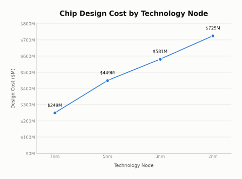
9
设计规范与验证直觉。为了有效利用 AI，芯片设计者需要能够制定精确且无歧义的问题规范来表达设计意图。AI 模型目前缺乏专家级的芯片领域经验（由于数据稀缺），因此提示（prompt）规范中的任何歧义都会增加出错的暴露面（例如，幻觉、不正确的假设等）。人类工程师凭直觉就能掌握的概念，例如时序例外（timing exception）的依据、电源域假设、设计权衡以及跨时钟域约束，对 AI 模型而言并不总是显而易见的。因此，设计者应当培养直觉，理解应在 AI 提示中指定哪些内容，才能将设计意图完整地编码给 AI 工具。这种 AI 直觉类似于现有设计者编写高度精确的 IP 规范文档的方式：他们凭直觉知道需要哪些细节才能使规范尽可能无歧义（例如，端口接口、功能、位宽、协议等）。
随后，设计者应当培养相应的直觉和技能，以便能够验证、信任并解释 AI 生成的交付物（collateral）是否正确。为此，设计者应当培养关于 AI 生成的交付物可能如何出错的直觉，并制定适当的检查（checks）、评分器（graders）和护栏（guardrails）来保证正确性。这类似于设计者目前验证 IP 设计的方式：捕捉边界情况（corner case）和执行路径，以确保 IP 设计在签核（sign-off）之前通过所需的功能检查。AI 生成的交付物同样需要这种类型的直觉，以验证并防范 AI 的失效模式（例如，看起来正确但功能上错误的解决方案）。最后，设计者应当培养直觉和技能，以理解并解释为什么 AI 生成的设计是正确的；这需要新的直觉和技能，以便能够解读并验证 AI 所做的工作，从而使其在使用和集成时值得信赖。
AI can be applied to accelerate the implementation of deterministic solutions, deployed in the loop to delegate tasks to AI agents, or both (Figure 8). Each approach has different tradeoffs which are worth building intuition about to ensure the most effective and efficient deployment of AI tools. Workflows which have AI-in-the-loop will continuously incur token costs which generally makes them more resource intensive than a comparable deterministic solution (if it exists). AI models also remain notoriously non-deterministic which requires (sometimes non-trivial) engineering guardrails to recover the guarantees of deterministic solutions. Deterministic non-AI solutions on the other hand tend to be faster and less resource intensive to operate but can only be implemented if a known closedform solution exists and is sufficient.
To navigate this dichotomy, silicon designers should build intuition and expertise to distinguish when to use AI to build a closedform deterministic solution (if it exists) and when it is appropriate to use AI-in-the-loop to build an agent. This intuition is typically acquired through academic training in silicon design fundamentals to discern what problems have deterministic closed-form solutions
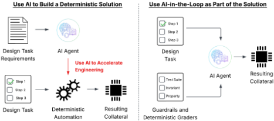
(e.g., polynomial time algorithms) versus those that are fundamentally difficult and may warrant AI-in-the-loop (e.g., spec-to-RTL lowering). Finally, AI-in-the-loop and deterministic processing can also be composed; however, deploying this hybrid approach again requires mastering the fundamentals to break down complex tasks to discern whether each task has a closed-form solution or may merit an agentic AI solution.
AI 硅生态系统及其能力正以前所未有的速度持续发展与成熟。因此，各种各样的 AI 工具、Agent 和集成方案已迅速大规模涌现（尽管方式略显混乱）。每一个单独的 AI 工具或 Agent 或许只能解决一个小问题；然而，随着时间推移，一旦 AI Agent 和工具的发展达到临界规模，许多以往难以解决的硅设计难题将突然变得可行。为了驾驭这些强大的新能力，硅技术从业者应持续监测并试验新兴的 AI 工具、Agent 和集成方案，以留意此类涌现行为（图 9）。正如 Claude Code 催生了强大的颠覆性软件开发新能力一样，从业者也应关注硅设计领域类似的涌现性与颠覆性能力。
这需要掌握两项核心能力：（1）持续进行有意识的实验，以监测并识别能力相变何时发生；（2）辨别哪些涌现能力真正具有意义。有意识的实验依赖于提出清晰的假设，以判定 AI 硅设计生态系统中何时出现了新颖且具有影响力的能力。这使得学术机构中的基础研究训练重新受到重视，成为工业界终身实验的基石。要辨别哪些涌现能力真正具有变革性，就需要理解硅设计中尚存的难题所在。如果对哪些问题是困难的缺乏牢固认识——例如时序收敛的复杂性、模拟数字协同设计，或工艺偏差下的可靠性——设计者就无法区分真正的突破与玩具式的演示。
10
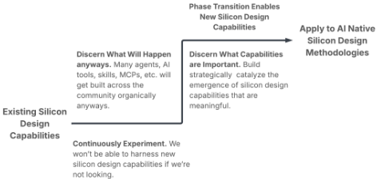
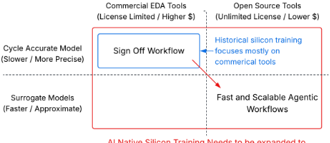
AI 原生硅培训需要扩展以涵盖开源与代理建模。
硅电子设计自动化（EDA）工具最初是为人类操作者开发的，但在 AI 原生时代，它们将必须同时支持人类与 AI 编排者，这会影响我们与这些工具交互和操作的方式。
面向硅设计的 AI 工具正以前所未有的速度在全行业得到采用。然而，作为硅设计根基的电子设计自动化（EDA）工具却构成了一个独特的结构性瓶颈。与软件工程工具不同，传统 EDA 工具往往是内部使用的、受许可证限制的，并且计算密集。EDA 工具通常运行缓慢，因为它们必须提供极高的精度与准确性，以便在签核（sign-off）之前前置落实设计验证保证，而硅片在流片（tapeout）之后无法再打补丁或修复；这使得高保真度的 EDA 工具成为硅设计中不可或缺的基础。遗憾的是，有限的许可证数量造成了根本性的可扩展性瓶颈，因为 AI agent 可以被无限地并行化和实例化，而 EDA 许可证却不能。而当这些工具集成在可能长时间运行的自主 AI agent 之上时，漫长的运行时间还会进一步加剧设计迭代的耗时。
这为开源工具和代理模型（surrogate model）带来了新的机遇——它们以精度换取速度与可扩展性，从而弥合这一差距，并有可能使整个行业迈向一个多层级 EDA 工具生态系统（图 10）。开源工具不能用于签核质量检查，但无需许可证，因此可以无限扩展。另一方面，中间层级的代理模型可以作为快速近似，以精度换取速度，从而缓解运行时间瓶颈。这些方案结合起来，有助于缓解在扩展 agentic 硅工作流时需要加以考虑的许可证限制和运行时间瓶颈。我们预计，签核和最终检查仍将需要商业 EDA 工具，但其作用仍将受限于许可证数量和运行速度。
为了应对这一转变，设计者应当理解在传统 EDA 工具与开源工具/代理模型之间应如何以及何时对执行速度与精度进行权衡。所有芯片设计最终都必须通过签核工具完成最终验证，因此即便在 AI 原生时代，在近期内熟练掌握需要许可证的商业工具仍将是最为基础的。然而，设计者还应能够辨别何时适合灵活运用开源工具来补充硅设计工作流，从而实现更快的设计迭代和生产力提升。因此，AI 原生硅从业者应当拓展自己的熟练程度与熟悉范围，使之同时涵盖商业签核工具和开源 EDA 工具。
硅设计者还应当能够评估何时采用快速、近似的评估是合理的，以及何时只有签核（sign-off）保真度才是可接受的。这要求对不同硅设计任务的基本机制有深入理解，从而能够辨别何时可以安全地部署代理模型（surrogate model）近似或开源工具，而不损害设计决策与结论的技术严谨性。例如，高层次的设计空间探索可能只需要设计成本的相对排序。另一方面，针对缓存配置或分支预测的微体系结构设计决策可能需要更精确的、周期精确（cycle-accurate）的粒度，而准备将设计投入制造则需要完整的签核 EDA 工具运行。
在 AI 原生（AI native）时代，EDA 工具接口将需要发生转变，以同时支持人类和 AI Agent，而不再仅仅面向人工用户驱动的操作（图 11）。这是因为越来越多的 EDA 工具调用将来自 AI Agent 或诸如模型上下文协议（MCP）之类的 AI 工具接口。这意味着 EDA 工具将需要提供稳定的机器可读接口，使 AI Agent 能够精确地对其进行调用，从而将这些工具集成并组合到上游自动化流程与工作流之中。为此，EDA 工具还需要随附 AI 原生基础设施，例如技能（skills）、上下文（contexts）和插件配套材料（plugin collaterals），以简化与 AI Agent 或工作流进行接口对接和集成的过程。
这与当前的模式形成对比：目前工具随附的是面向人类使用的大型单体式文档手册。当前为了弥合这一差距，设计者尝试将人类可读的文档交由 AI 进行分解、组织和提炼，转化为上下文和技能等 AI 原生格式。
11
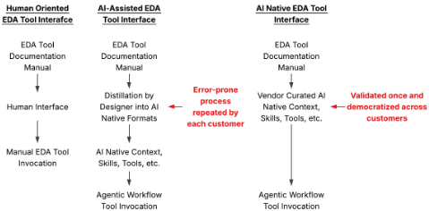
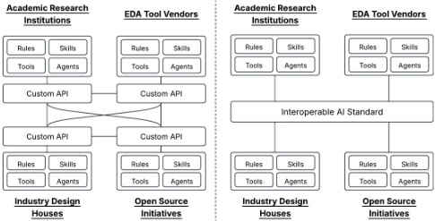
然而，这一过程本质上容易出错且难以验证，因为大多数用户并非 EDA 工具设计及其详细内部机制方面的深度专家。相反，EDA 工具供应商应当直接提供 AI 原生格式，这样供应商在整理与验证方面投入的工作便可以规模化地推广到各个客户团队。如果缺乏这些既定且干净的接口，以及经过精心整理的、精确的 AI 原生上下文与接口，EDA 工具集成到 agentic 工作流中的过程将明显更不稳定、更脆弱，也更容易出错。
要为芯片构建有效的 agentic 工作流，从业者应当对高度复杂的芯片设计任务进行分而治之与并行化。这样一来，设计者便可以将委派给 AI agent 或确定性工具的每一项任务模块化，并降低其规模与复杂度。这降低了所需提示规范的复杂度，也缩小了 AI agent 可能出错的暴露面。更细的粒度还使得理解和解释 AI 在每一步中所做的工作这一过程更易于管理，从而验证其正确性。这种可审计性与可解释性对芯片设计而言再次显得尤为重要，只有这样才能使 AI 生成的任何交付物值得信赖。最后，更细粒度的 agentic 工作流设计使设计者能够对大语言模型（LLM）配置进行专门化，因为某些 LLM 可能比其他 LLM 更适合某些特定的设计任务。
在更高的层面上，模块化的 agentic 工作流设计使得跨不同工作流组合与复用 agent 变得更加容易（类似于软件库）。这种模块化还使得 agent 并行性以及针对高度复杂 agentic 工作流的潜在运行时优化得以显现，从而隐藏部分可能漫长的 EDA 工具运行时间，进而有望实现更快的端到端设计迭代时间。最后，随着 agentic 工作流复杂度的增长，单一 AI agent 不太可能在芯片设计流程中的每一项任务上都表现最优。如果没有某种层次化分解，完整规定任务所需的规范与提示的长度将超出实际可由人工管理的限度以及 LLM 上下文窗口。因此，我们预计生产级工作流将可能转向编排由异构 agent 组成的集合，其中每个 agent 都专门针对不同的阶段或子问题。
最后，标准化接口与互操作性还提供了一种将 agent 返回的保证或问题加以形式化的途径。例如，如果某个 agent 生成的交付物通过了 lint 和时钟域交叉（CDC）检查，那么这一保证（以及任何证明）对于传递给任何下游 agent 都很有价值，可避免重新执行这些检查。反之，如果某个 agent 遭遇失败或产生低置信度的结果，那么一个能够传达错误性质、置信度、调试信息、日志和遥测数据的标准化接口就十分重要，以便触发适当的升级策略与工作流，避免让失败或低质量结果在流程中悄然传播。
AI 工具与熟练运用 AI 的能力，极大地扩展了硅设计师要在硅设计流程最前沿开展工作所需掌握的知识。换言之，在基础的第一性原理训练之上，如今还需要额外的 AI 技能、培训与经验，才能从事先进的硅设计。这并不意味着昔日的核心硅原理已不再适用；相反，它抬高了学生所需掌握的训练量门槛。
为了在教育过程中加速并压缩训练量，值得思考如何构建 AI 工具以补充学习过程，同时防范过度的认知卸载。若使用得当，AI 可以成为强大的加速器，加深学生对核心概念的掌握，并发挥学习辅助工具的作用，而非替代真正的学习。我们已经看到学生借助 AI 自学，以加快研读材料的速度、促进对深度技术知识的吸收，并成为极为冷门学科的领域专家。为了成功管理并压缩 AI 原生实践所需的训练，应当鼓励学生将这些工具视为增强自身智能与学习过程的途径，而不是又一次认知卸载的练习。
归根结底，要促成对 AI 的正确采用以建立真正的理解，需要每位学生和从业者诚实地面对自己：自己究竟是在构建真正的精通，还是仅仅在满足表面层次的要求。教育者可以讲授有效驾驭 AI 的基本框架与方法，但说到底，如何加以应用、付诸实践并对自己负责，仍取决于学生本人。同样，对于前沿研究而言，若使用得当，AI 可以成为有力的辅助，切实补充研究工作并推动研究前沿向前发展；否则，它就有沦为基础知识替代品的风险，从而限制前沿研究赖以构建的基础。
为了使学术训练适应 AI 原生（AI-native）世界，教学策略需要重新调整激励机制，使学生在依赖 AI 自动化之前先掌握基础原理。一种具体的做法是重构考核权重，以直接管理学生的激励。教育者可以营造一种基础掌握不容妥协的环境，同时仍承认学习 AI 技能的必要性，具体做法是将允许使用 AI 的课后作业和实验任务在课程总成绩中的占比上限设为较小比例（例如 10-20%），而对严格监考、禁用设备的考试赋予很高权重（例如 80-90%）。这种激励的再平衡鼓励学生培养基础的手动问题求解能力，而权重较低的作业仍能激励学生进行尝试，以培养 AI 熟练度。也有提议回归蓝皮书考试（bluebook exams）或不使用 AI 工具的实验课，以更严格地控制学习环境，但它们在学术实践中的使用方式很可能取决于具体课程、院校和教育理念。
此外，作业需要鼓励学生主动验证、质疑并批判性地评估 AI 结果，而不是被动地生成输出。例如，在硬件工程中，一个提示词（prompt）可能要求学生使用 AI 在 Verilog 中生成一个 INT8 乘累加（MAC）单元，但核心评分取决于学生将 AI 输出与课堂理论相互印证的能力，例如口头具体解释该设计为何是最优的或为何不是最优的。类似地，教师可以提供一个带有严苛通过标准的严谨“黄金测试平台”（golden testbench），让学生调试并解释 AI 生成的硬件描述语言（HDL）为何失败；或者反过来，让学生手工编写测试平台来验证给定的被测器件（DUT）。至关重要的是，必须严格劝阻使用 AI 同时生成 DUT 和测试平台的做法；完全自动化的循环会剥离掉必不可少的验证与学习反馈回路。
最后，教学框架需要整合针对综合、论证与传达结果等软技能的训练，理想情况下通过直接的人工评估来实现。引入口试提供了一种强有力的机制，能够探查学生真正的理解深度，迫使他们清晰阐述为何做出特定的设计选择，而不是仅仅依赖能正常运行的代码。对于选课人数众多的大型课程，这种评估可以分解并下放到实验课或小组项目环境中进行，使人工评估流程更具可扩展性。由于这些软技能的培养需要时间，因此在整个课程体系中持续融入这些人工评估环节十分重要，以便学生在进入行业之前能够充分磨炼这些技能。
随着学生步入职场，学术与技术评估方法也需要随之调整，以便同时评估 AI 原生（AI native）熟练度。我们已经看到一些实例，行业面试现在允许使用 AI 工具 [3, 9]，但究竟什么样的最佳方法、面试形式和技术问题才能恰当地评估候选人，这仍是一个悬而未决的问题。然而，有一点很可能不会改变：基于核心基础知识对问题进行评估和批判性思考，并制定与之互补的 AI 技术的需求依然存在。因此，行业评估流程需要重新（但不过度地）强调转变我们评估硅设计基础的方式，同时也要考虑到 AI 改变我们硅设计实践方式所带来的转变。
13
这一转变最直接的体现之一将出现在技术面试中，技术面试需要做出调整，以同时考察 AI 熟练度与技术基础。例如，面试官可能会问：“给定一个任务 X（例如，面向向量单元的软件优化），你会如何开发一个 AI 辅助的解决方案？有哪些地方你不会使用 AI，为什么？”这类问题为候选人提供了机会，展示如何精确地对问题分而治之，而不是盲目地套用 AI。它还将一个真正困难的问题与可能存在已知（部分）解法的问题混合在一起，为候选人提供了机会，展示他们能在多大程度上辨别何时（不）应使用 AI。我们预计，随着我们迈入 AI 原生时代，还需要精心设计类似类型的评估，以考察本文前文所述的其他 AI 原生能力。
数字设计规格与验证。随着芯片工作流从“我如何实现设计”转变为“我如何规定、界定并评判 AI 所完成的工作”（第 3.5 节和第 4.1 节），芯片设计验证方面的技术培训将变得更加重要。为了有效地对 AI 智能体（agent）进行提示，从业者需要学习如何编写完整而精确的规格说明来表达设计意图。这种培训与数字设计课程中所学的技能颇为相似：学生在这些课程中学习如何针对精确的 IP 规格进行规划与工程设计，并确保设计能够通过预期规格的验证。这些课程还提供了工程师所需的训练，使其能够辨别边缘情况、预见不明显的失效模式，从而确保规格尽可能完整。这些技能可以转化为构建完整规格说明提示所需的技术工具集，也可用于制定智能体（agentic）工作流所需的确定性验证、评分器（grader）或护栏（guardrail）检查。由于可能出错的地方非常多，让芯片设计师在实际培训中至少亲身遇到一次各种类型的失效模式，从而明白自己需要警惕什么，这一点将十分重要。
技术沟通与软技能。AI 将逐渐把工作流瓶颈转移到批判性思维、沟通以及其他协作性工作流环节上（见第 3.2 节）。这使得诸如协调能力以及与团队成员、高层管理和第三方进行技术沟通等基础“软”技能重新受到重视。软技能在实践中尤为重要，因为在解决方案获得采纳或部署之前，需要与更多的协作者和行业流程进行协商。
14
| Relevant Training | Key Fundamentals | Relevance to AI Native Silicon Design |
|---|---|---|
| Software Engineering Principles for Silicon Design | Software Engineering Best Practices Building Hardware like Software Designing and Implementing Complex Systems | Provides foundational software basics and best practices that AI tools are built upon and assume |
| Silicon Design Basics | Analog Mixed Signal Circuits, Physical Design, Circuit Theory, PPA Optimization, Simulation and Modeling, DV, DD, DFT, EDA, SoC, Architecture | Core Fundamental Silicon Design Principles and Basics |
| Algorithms | Divide-and-Conquer Complexity Analysis Algorithm Design | Problem Decomposition and Mapping to Agentic Workflows Discerning Hard Problems and When (Not) to Use AI Recognizing Emergent Design Capabilities |
| Design Validation and Verification | Design Implementation Methodology Testing and Validation | Prompt Specification Engineering Encoding Design Intent Formulating Deterministic Guardrails and Graders for AI Agents |
| Technical Communication | Expressing and Specifying Design Intent Communicating Results Efficiently | Prompt Engineering and Fully Specifying Design Tasks Design Decision Justification Explaining and Justifying AI-Generated Results |
| Computer Architecture and Systems Design | Building, Testing, and Validating Large-Scale Silicon Systems | Designing and Testing Large-Scale Agentic Silicon Workflows |
| Random Processes | Reasoning about and Designing with Randomized Behavior | Designing Tools (i.e., agentic workflows) with Randomized Processes in the Loop |
| Advanced Silicon Research Topics | Continuous Experimentation Advanced Research Methodology Open Source EDA Tool Fluency | Watching for Emergent AI Enabled Capabilities Formulating Hybrid OSS/Sign-off EDA Tool Agentic Workflows |
| Relevant Training | Key Fundamentals | Relevance to AI Native Silicon Design |
一旦解决方案完成，设计师需要能够向协作者清晰地阐述并沟通他们构建了什么，以及为什么应当采纳或部署该方案。设计师提出了技术解决方案，却因其从未被沟通、演示或提交正式评审而从未获得部署，这种情况并不罕见。因此，即便在一个实现可以非常快速的 AI 原生时代，从业者仍需具备说服协作者使用并部署其解决方案的技能。
计算机体系结构与系统设计。设计、实现和调试自主的芯片 Agent 工作流需要系统级的视角，这使得计算机体系结构与系统设计方面的学术课程在 AI 时代变得必不可少。随着设计者的角色向编排转变，主要的工程挑战也从较低层次的实现与执行逻辑，转变为管理、编排和调试复杂的 Agent 系统以设计整个系统。计算机体系结构课程教会学生在这个更高的抽象层次上管理整体系统的复杂性。此外，对大型芯片系统的动手验证使工程师具备可直接迁移到复杂 Agent 工作流的技能，例如暴露适当的遥测数据以引导调试、诊断并修复间歇性故障，以及在大规模场景下精确定位并修复出错之处。
随机化算法。构建 AI Agent 需要在非确定性的黑盒大语言模型（LLM）行为下进行推理、围绕其进行设计并加以评估。LLM 实际上是概率引擎，除非有护栏来验证结果，否则它们缺乏确定性保证。因此，设计 Agent 系统与围绕模拟退火（simulated annealing）、遗传算法（genetic algorithms）等随机组件来设计算法有许多相似之处。同样，设计者应当理解随机化算法设计的基本机制，这些机制可直接迁移到如何思考实现、评估、测试和调试非确定性 Agent 工作流的机制上。这种训练还能建立起关于何处可能出错以及如何设计护栏的直觉，而这些直觉可直接迁移到 Agent 工作流的设计挑战中。
持续实验。近期的芯片从业者应当持续开展实验，以跟上 AI 当前走向成熟的速度，并为涌现的设计能力做好准备。这要求为从业者配备终身持续实验的思维方式，以及用于观察和理解真正变革性的芯片设计能力何时涌现的工具（参见第 4.3 节）。在学术训练中培养这一技能组合，通常需要讲授基本的研究原则与方法（即科学方法）。这种持续实验的思维方式可以有多种形式：从不断尝试用最新的 LLM 解决某个问题，到混合搭配不同的 Agent 以评估其能力，再到搭建大规模、持续运行的实验以探索各种可能性。培养搭建、执行并解读实验结果的技能组合，对 AI 而言将变得越来越重要，因为这些系统的复杂性和规模使得得出无懈可击的、基于实证数据的洞见与结论变得愈发困难。
15
动手实践经验。即使有了 AI，要理解构建芯片所涉及的所有技术上的细微之处、边缘情况、失效模式和软技能，仍然没有什么能够替代动手技术经验。这是因为业界的工作流程和设计问题往往无法完美地融入纯理论的教科书式培训框架和教学法。为了弥合这一差距，我们通常采用专门设计的动手实验培训、小组项目和作业，使学生能够获得直接的技术经验，从而培养这些技术技能。这能让学生熟悉设计流程的现实情况，例如使用 EDA 工具、评估综合报告、调试复杂的验证环境以及测量边角情况覆盖率，而这些经验随后可以迁移到业界环境中。针对如何使用 AI 工具进行芯片设计的培训也不会有什么不同，同样需要类似程度的 AI 工具动手培训，以使学生建立熟悉感和直觉，日后可将其应用于业界实践（参见第 4 节）。最后，我们指出，在实践中，AI 工具或 agent、token 约束以及 EDA 工具流程存在很大的差异，因此学生需要学习可在不同工具、版本等之间迁移的直觉和技能。
本节就我们预期 AI 将如何催生新的先进硅技术研发方法，提供了一些高层次的见解。
如今，研究生们常常抱怨，芯片流片（tapeout）或大型研究项目的大部分内容都是工程工作（例如物理设计、验证、集成和工具流程编排），而真正的研究只占很小的比例。借助 AI，我们有机会将更多的工程工作自动化，从而重新平衡学生能够专注于研究与创新的时间。要做到这一点，学生需要理解如何加速构建基础脚手架（scaffolding）和样板内容（boilerplate），以支持他们所期望的研究工作流程，并防止知识在一代代研究人员之间流失。这要求学生先学习工具流程如何运作、在哪些环节会失效，以及设计决策如何在整个技术栈中传播，然后才能有效地指导、诊断或验证 AI 生成的实现；这还需要构建类似的 AI 原生（AI native）智能池，使其能够在一代代研究人员之间传承，以减少样板工作或知识库的重复构建。如果对流程如何构建的基本原理缺乏严格的理解，学生将无法指定和编排 AI Agent 来加速实现，也无法捕获并编码专业知识以促进更高效的研究。为了鼓励学生吸收这些基础知识，硅设计教育课程需要进行分阶段设置：学生首先在完整的芯片设计流程中培养专业能力，然后再利用 AI 学习如何加速这些流程的实现，而不是盲目地向 AI 提问。
先进的智能体 AI（Agentic AI）有潜力为那些已获得数十年投入的成熟研究领域，以及那些超前于其时代的新兴技术与方法论注入新的活力。智能体 AI 几乎可以与任何研究领域相结合，因此，要识别出最具前景的投资回报可能很快就会变得令人应接不暇。为了更好地理解各个研究方向的潜力，研究人员首先应当从根本上理解一个研究问题最初为何困难，以及先进的智能体能力是否改变了这一权衡考量。智能体 AI 能够使重新审视某个研究领域变得值得的若干关键方式（除其他方式外）包括：
硅技术领域中能够从商品化工程中受益的研究问题示例，包括大规模系统设计、架构基准测试（architectural benchmarking）或新型编译器设计等领域。这些领域即使仅仅起步也需要大量的工程投入。另一方面，诸如异步电路、替代性存储器技术、随机计算以及受模拟启发的电路等新兴计算领域的研究，则可以同时受益于商品化的工程能力以及智能体 AI 对晦涩的计算编码和设计问题进行推理的能力。归根结底，要高效地把握智能体 AI 所解锁的新研究机遇，仍需要每一位研究人员去解读并批判性地思考 AI 如何改变其各自研究兴趣所面临的历史瓶颈。
在 AI 时代，定义一名优秀的博士生、教授或研究从业者的标准，仍然始于那些从未改变的核心基本素质。AI 并非取代人类智慧，而是作为研究人员工具箱中的一种先进工具，用于加速研究发现。研究人员仍然必须具备不依赖 AI 就能解读结果、制定严谨的实验方法并解释其发现的基础能力。即使有了 AI，研究人员也应能够严格运用科学方法的核心原则来验证并产出高质量的研究。对于博士生而言，博士生涯仍然是获取并掌握这些技术基础与研究素养的重要训练场，为其在学术界或工业界的职业生涯做好准备。
16
这些培养项目也仍然是磨炼重要软技能的主要训练场，例如主动担当、沟通复杂思想以及为技术决策进行辩护。
更广泛地说，整个硅研究文化需要在创新的传播、评估和积累方式上演进。传统上，技术论文是记录创新、传递技术洞见、复现结果并在此基础上逐步积累的主要载体。然而，随着 AI 使已发表论文的数量和速度大幅增加，这种传统的交流模式已无法扩展到与研究产出速度相匹配的规模。为了适应这一变化，研究人员应当重新思考我们如何协作、如何使结果可复现，以及如何以 AI 的速度共享知识。除非研究能够通过共享代码或详细的方法学实现完全可复现、使他人得以在其基础上继续构建，否则它将无法为科学界带来全部潜在价值。
最后，使学术界的硅研究与实践中的实际需求保持同步，无法仅靠学术研究机构独立完成。弥合这一差距将需要工业界实践与学术机构之间更紧密、更积极的合作，例如联合论坛、客座讲座、特邀报告以及共享的研究计划。这些机制和论坛使工业界领袖能够持续提供对新兴实践、工具和人才缺口的洞察，这对于维持该行业的人才输送渠道至关重要。
调整我们交流与转移研究方式的一种途径，是采用更加 AI 原生的技术转移模型，使工业界能够更好地吸收并整合体量日益增长的硅研究。过去，密集的技术文本和（往往）冗长的技术格式对于技术转移而言是必需的，因为其预期受众是人类专家。然而，在 AI 原生时代，这种情况正在逐渐改变，为人类与 AI Agent 两者精心策划技术创新正变得日益重要。为支持这一转变，研究人员应当调整沟通与转移前沿研究的方式，使其更加 AI 兼容（见图 13）。
研究界已经开始出现向 AI 原生机制转变的趋势与提案，例如 Agent 原生研究工件 [8]、Claude Code 插件以及技能（skills），这些机制为使技术贡献能够直接被先进 AI Agent 和工作流所部署开辟了路径。通过将研究创新打包成 AI 原生格式（即上下文、技能、工具、Agent 等），研究人员和工业界从业者将能够快速地大规模转移和部署这些创新。
一旦前沿技术研究与创新被封装进这些与 AI 原生兼容的表示形式（即规则、技能、工具、Agent 等），它们便能够在学术界与工业界环境之间进行可扩展的转移。这进而使工业界能够利用先进 AI 通过集体超级智能（collective superintelligence）放大工程专业知识的能力，只需导入这些资产即可部署这些创新。这与历史上的研究与技术转移模型形成对比——后者需要对研究结果进行人工评审与复现，既无法扩展到少数几篇论文之外，也将影响力局限于少数深度投入的团队。
硅设计研究仍需解决如何开放电子设计自动化（EDA）工具（可能带有许可限制）以复现功耗、性能和面积结果的问题，才能充分实现这一全新的 AI 原生技术研究模型。不受许可和知识产权限制的开源工具可能是解决方案的一部分，但（在撰写本文时）研究方法学的细节仍是一个悬而未决的问题。因此，展望未来，随着工业界不断向前发展，研究界应当着手解决这些技术细节，并可能考虑将 AI 原生研究格式融入可复现性评估流程（例如工件评估（artifact evaluation）或技术论文投稿）之中，以促进技术转移。
最后，这种 AI 原生技术转移模型还可以推广到研究机构之间的协作，并超越硅设计的范畴。对研究人员而言，这意味着它提供了一个机会，使其能够在自己并非原生专家的领域中吸收并利用先进研究成果与超级智能。这对于开展跨学科研究，或借助这些先进研究知识库与智能快速成为深度专家而言尤为重要。例如，计算机体系结构研究人员可以利用关于可持续性的超级智能上下文来开展可持续性感知的硅设计；而首席架构师则可以通过成为某一特定算法的专家，进一步深入算法设计，探索协同设计（codesign）的机会。
芯片设计过程并非单一决策，而是从架构选择到布局与时序优化等数千项设计决策共同作用的结果。由于没有任何决策是孤立做出的，每项设计的优劣都需要在流程中所有后续决策的上下文中加以评估。这些决策的整体质量只有在整个流程完成后才能显现，从而形成了一个延迟的奖励信号。因此，将硅设计过程表述为强化学习（Reinforcement Learning, RL）问题便是其中一种方式：我们需要在不确定性和延迟奖励下优化序贯决策。为了充分利用这一理论，或许值得重新审视如何在这一更高层级的 RL + 智能体 AI（agentic AI）框架内构建和设计 AI 工作流。
RL 智能体生成候选设计或修改方案，通过评分器（grader）评估其正确性，利用高效的检查手段进行快速探索，并使用资源密集型的签核（sign-off）工具进行验证，随后基于奖励信号更新其策略，并不断重复。这一过程会自行产生训练数据，因为每次迭代都会生成一个可供智能体学习的 (state, action, reward) 元组。这规避了数据稀缺的挑战，因为采用 RL 形式化表述只需要一个定义良好的评估函数来对结果进行确定性评分。将这一方法应用于硅设计的具体方法论仍是一个悬而未决的问题，但它为在 LLM 缺乏硅设计数据的情况下实现智能体化硅设计提供了一条前进的机遇。
17
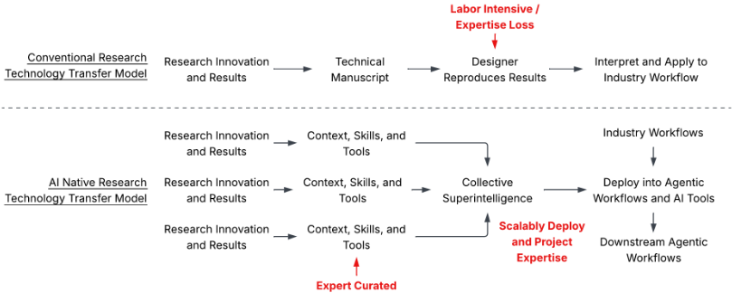
研究资源仍然是有限的，即使有了研究智能体（research agents），算力容量仍然存在限制，因此研究人员在 AI 时代仍应高效地开展工作。然而，鉴于研究格局变化的规模和速度，单个研究人员在判断应当从事什么工作时可能会感到应接不暇。为了使研究投资过程更加高效，研究人员应当能够辨别哪些 AI 工具、能力和创新将会自然而然地出现。复用那些很可能终将存在的能力、工具和组件，可以减少重复性工作，从而使研究人员能够专注于解决更长期的难题。否则，各研究工作流就有可能并行地重新发现相同的创新，从而稀释研究投资的总体回报。
此外，由于针对同一问题很可能会涌现出许多相互竞争的解决方案，因此研究人员对开展协作以及组合不同的方法持开放态度十分重要，因为具体的技术方法不太可能完全相同（至少在近期内如此）。例如，多个并行的工作可能会实现 Karpathy loops [5] 来优化同一类型的程序，但其底层的技能、策略和提示词可能各不相同。研究界应当拥抱这种动态，并对协作持开放态度，以确保这些创新能够得到妥善的复现、组合并使之相互补充，从而实现整体大于其各组成部分之和的技术解决方案。
毫无疑问，AI 将变革我们设计芯片的方式，而在 AI 原生（AI native）时代，整个行业也将发生永久性的改变。在本工作中，我们针对学术界与工业界如何为驾驭这一转型增添结构性框架提供了观点与讨论。需要指出的是，本文所阐述的观点和立场仅代表某一时间节点的快照；尽管我们尽量避免提出过于规定性的建议，但随着芯片设计实践的持续演进，本文中的立场仍需定期重新审视。归根结底，向 AI 原生芯片设计的转型很可能是一个民主化（democratized）的过程，它需要整个行业的集体与共同努力，其规模超出了任何单一机构的范畴。因此，社区持续交流关于相关挑战与潜在解决方案的看法将十分重要，以便共同确保学术训练与工业实践保持耦合，为迎接 AI 原生的未来培养下一代科学家和工程师。
Idgunji, Thomas B. Jablin, Jeff Jiao, Tom St. John, Pankaj Kanwar, David Lee, Jeffery Liao, Anton Lokhmotov, Francisco Massa, Peng Meng, Paulius Micikevicius, Colin Osborne, Gennady Pekhimenko, Arun Tejusve Raghunath Rajan, Dilip Sequeira, Ashish Sirasao, Fei Sun, Hanlin Tang, Michael Thomson, Frank Wei, Ephrem Wu, Lingjie Xu, Koichi Yamada, Bing Yu, George Yuan, Aaron Zhong, Peizhao Zhang, and Yuchen Zhou. MLPerf inference benchmark. arXiv preprint arXiv:1911.02549 [cs.LG], 2020. https://arxiv.org/abs/1911.02549.
19